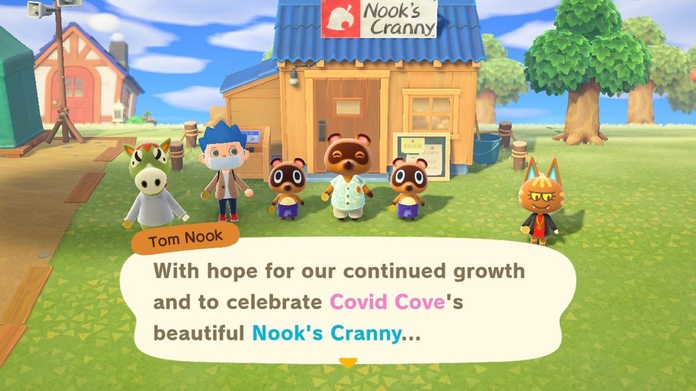

Sunday, April 26, 2020
Not Abandoned Yet
So if you are one of the mythical people who accidentally stumbled on this site while
it's under construction you might be thinking, "Hey this guy hasn't posted in weeks! Lazy bastard has
already abandoned the project!"
But no, I'm still very much thinking about and planning what is to come. I just haven't done much in
the way of working on the nuts and bolts of the site design in a while. Have been more focused on
charting
a way forward and laying out areas of interest to study. More on that in the future and hopefully a
consistent posting schedule will be adopted soon as I transition from the setup phase to actually
working on learning about games and how to create them.
What I'm Working On
Tightend up the CSS on this site a bit. Killed a font choice I had made earlier. Tried to
refine the whole 80's arcade look I'm going for with out being too garish.
Doing a lot of planning, and working out where I want to go with this project and what my
early goals and areas of focus should be. Will post more about this in the future as plans firm up.
Monday, April 13, 2020
VR Rabbit Hole
So I finally bounced off of Animal Crossing. Was fun for a bit to be playing the same game the rest of the world is fawning over, but it just feels like slow tedious work playing after a while. I'm tired of waiting for the dumb owl to finish talking so I can get something appraised. I'm annoyed every time the morning announcements wastes a bunch of time telling me there is no news. I'm just kind of over it. Was fun for a bit, but ready to move on.
So I was reading the news last Tuesday and saw that No Mans Sky added Mechs, and I thought, hey, yeah, I own that game, maybe that would be a fun alternative to Animal Crossing. If I'm going to work on building up a base, I might as well do it in VR with the option to fly a space ship and pilot a mech! So I dusted off the Oculus and reloaded No Man's Sky on my PC.
Started playing it Tuesday night after my wife and kid fell asleep. Then spent the rest of the week down a VR rabbit hole. OMG that game took over my life! I was staying up till 1 or 2 in the morning every night. My vision was all wonky from being in VR too long. When I was not in it I was reading about it strategizing what my next moves would be.
I started a new game and just took my time and enjoyed the process. Wasn't in a rush. I'd played it before and liked it, but got distracted by some other game and never came back. This time I understood the basics better, and knew what I had to do, and didn't rush to get out there. Just enjoyed building up my base and expanding my alien grammar. Took long drives on the radioactive hellhole I started on looking for copper. Enjoyed leisurely flyovers of nearby planets taking in the procedurally generated scenery. I'm not sure what the experience would be like if it wasn't VR, but going into a VR fantasy land, exploring strange new worlds, flying a space ship around, THAT is how you cope with a quarantine!
The downside is that this game is a massive time suck and the VR starts to mess with your head when you stay in it too long. I was in a daze after playing it for 5 days straight. Friday was a holiday at work, so pretty much just played it all day Friday and Saturday. When I closed my eyes I felt like I was still in the cockpit and the world was moving. I've developed enough of a tolerance to VR that I no longer get the nausea and VR hangover, but I definitely felt slightly off. It's both compelling and disturbing how deep I fell down this rabbit hole. Like a funny little VR acid trip. Yesterday I decided to stop for a bit. Not because it's bad, but because I'll never get anything done if I don't force myself to take a break. So I'm going to go on hiatus till I get this website moving again.
But seriously, if you don't have something productive you want to accomplish and you want some sort of escape from the quarantine lockdown, No Man's Sky in VR is a damn fine option if you can stomach the VR after effects. It definitely kicks the crap out of Animal Crossing in the escapist entertainment category. It's the first time since the COVID-19 quarantine started that I've been able to just lose myself in something and stop worrying about the news and stressing about the state of the world.
What I'm Working On
Just getting back in the grove of updating this site again. Did something small today and discovered the joys of free Google Fonts. I've always hated chooseing font styles. I never know what to pick. Too many options and I don't have that font snob gene where I can instantly look at something and know it's all wrong. So if you are a font snob, I'm sorry. My choices probably offend your fine sense of style. it's a weak spot for me. Something I need to work at. So I'll probably change these fonts a few times before I settle on a style that feels right.
Tuesday, April 7, 2020
Better Late Than Never
OK, so I didn't post yesterday. But to be fair, I didn't do anything worth posting about. It was a busy Monday and by the time I got around to thinking about this site I was too tired to want to give it only a half assed effort, so I punted to the next day. So maybe daily updates are too ambitions at this particular stage of the project. Right now I just need to focus on building the website and worry about a regular schedule once I get out of the preliminary phase and into the main point of this site. So future posts I think will come as I have things worth posting about. Speaking of…
What I'm Working On
Added some CSS styling to the website. I'm sure it looks awful to anyone who knows what they are doing, but personally I've had a lot of fun applying the Pac Man color pallet to this site. Gives it a fun retro vibe and now I'm dreaming of ways to make this whole site feel like it exists in a 1980's era arcade cabinet.
What I'm Studying
Still watching "The Web
Developer Bootcamp" by Colt Steele on Udemy. On the CSS units at the moment. Looking forward to getting to the Bootstrap section next so I can add some canned polish to the site and mess around with layouts more.
What I'm Playing
Still playing Animal Crossing, but losing interest fast. It's key benefit is that it's on the Switch and is easy to hop into for a few minutes here and there. But I'm not interesting in spending my free time shaking all the trees or crafting ugly egg themed things. Waiting around to see if I can sell some turnips for a profit and pay off my in-game home loan and see what the next stage expansion of the house looks like, but I'm already casting around for a different game to play.
Stray Thoughts
So I figure now is as good a time as any to lay out what the point of this site is. Self-Taught Games is the seed of what will eventually become my game studio. I want to make games. But I don't know a thing about that really. I'm not stupid, I know you can't just jump in and make blockbuster games with no experience. So I've decided the best way to get close to my dream is to enjoy the journey and not worry so much about the destination.
I've got some really cool game ideas for massive 3D action adventure RPG games with strategic and tactical game play. Man, I've got some dream projects on my back burner. But there is just no way I can make those games right now. But that's the target. Maybe when I'm 90? Who knows. But I also have years worth of other daydream ideas about games, and some of the smaller ones I could maybe solo dev my way through. I've got some old school RPG ideas, I've got the requisite Metroidvania that all indie dreamers have, I've got big and small ideas, and maybe I can make some of the smaller ones. Eventually. Not now, but maybe soon enough that I won't be 90 by the time I'm ready for them.
But again, right now I am Jon Snow and I KNOW NOTHING. So I'm going to start at the beginning. Or as close to it as feels fun and useful. I'm going to focus on small scale stuff. Learn some JavaScript, make some simple guessing games, hangman, tic-tac-toe, etc. Get my feet wet. Then see if I can make some old school arcade game clones based around stuff like Pong, and Pac Man and things from that era. Maybe try my hand at some early computer game styles like Zork or early Lucas Arts games. Try to have fun exploring the early history of games and learning useful tricks along the way.
When I outgrow JavaScript and browser based games I'll jump to a real game engine like Unity or Unreal. When I'm ready I'll try to make the jump from Atari era games to Nintendo era games. My idea is to just slowly take my time really absorbing and learning the concepts and techniques behind good game, and bad games, and build my knowledge base and understanding. When I'm ready, take the next logical step and move up the ladder.
The hope is that eventually I will know enough that I can try my hand at releasing a full blown game on a platform like Steam or Epic Game Store or wherever makes sense when the time comes. Something small, but cool and complete and fun to play. Then I can take the lessons learned from that experience and do it again and again, adding complexity and evolving my style till I get it right and/or I make enough to hire some help and really have a full on studio capable of making that epic 3D strategy RPG game that is knocking about in the back of my head.
But until I get there, I'm going to have a lot to learn and I want to have fun with it. So I'm starting this blog to share what I'm learning, keep myself motivated, maybe inspire others like me, and make the process of learning how to achieve my dreams a fun activity in it's own right.
Sunday, April 5, 2020
First Post!
Welcome to the inaugural post of Self-Taught Games! This will be a (hopefully) daily log of what’s going on with this site.
What I'm Working On
Right now, all activities are focused around getting this site up
and running. Brushing up on my HTML and CSS, and trying to learn new tricks I can apply to this project.
What I'm Studying
Web Development is my chief focus right now as I work on building up this website.
I started watching
"The Web
Developer Bootcamp" by Colt Steele on Udemy. So far I'm finding it useful. He’s a pretty good
instructor. Presents things in a clear and thorough manner without being
annoying or hard to follow. Will give a fuller review once I finish the class.
What I'm Playing
Oddly enough, Animal Crossing. Not my typical game. I’ve never played any of the
Animal Crossing games before. But with current events being heavily focused on
the Corona Virus and California on lockdown, I’m finding it strangely relaxing
to play. My little colony of Covid Cove is growing nicely, the music is super
chill, and it’s just got this really peaceful vibe. Not sure how long I will stick with it. Already there are
things like Bunny Day that I'm finding annoying. But considering how stressful the real world is right now, the simplicity of this
game is a nice escape.

Stray Thoughts
Right now this site is just a sad little skeleton of a website. Just one page, basic HTML, no CSS. I decided to start the blog today and throw it out into the wild
even though it's raw and not ready yet because I've got a horrible habit of procrastinating and never actually starting things. I've been kicking the idea of this website around for a
long time now and I figure with the Covid-19 shelter in place order and the extra time I have on my hands if I don't start it now, I probably never will and should just give up on the idea.
So as it seems like I'd be a fool to keep procrastinating this project any longer I've decided that in my spare time I'm going to actually
start building this thing, and blog about it all the while as a way to build the habit of working on it every day and light a fire under my ass to keep going and not quit.
So as the days and weeks go by you will get to see me take this one little page and hopefully grow it into a fully modern looking website that has interesting and useful content. It's a work in progress,
and likely always will be one. But it feels good to finally take that first step and officially launch this website. Here's hoping I stick with it and there is another post tomorrow!